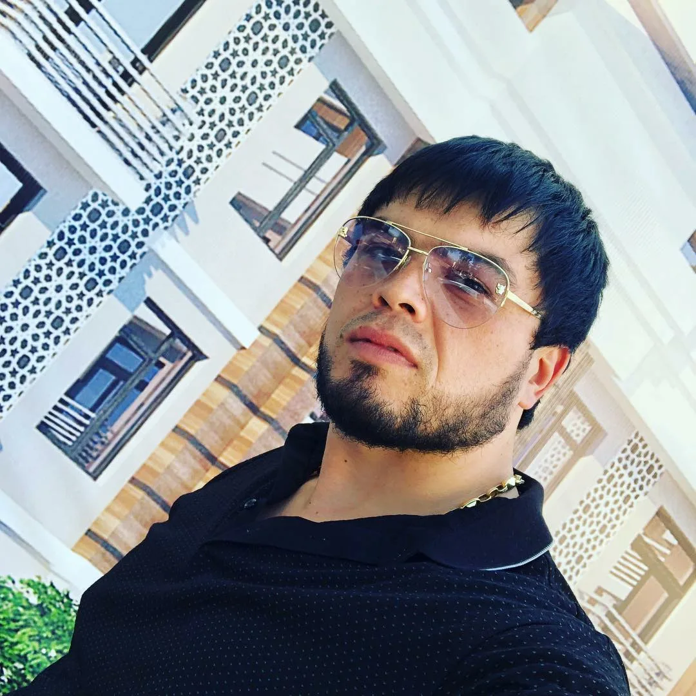

Ташкенте задержан Саида Азис Саидалиев, известный как Саида Азис Медгородок. Сотрудники
ГУВД Ташкента задержали Саида Азиза сайдалиева, также известного как Саида Азиз
Медгородок. По данным ведомства, он и несколько человек подозреваются в вымогательстве
долгов у людей за деньги.
Саида Азиз сайдалиев из Медгородка, глава сайдалиева, известного как Саида Азис
Медгородок, задержан и заключён под стражу. Расследуется уголовное дело по статье 165
Уголовного кодекса Узбекистана.
В рамках расследования выявлены факты преступлений, включая вымогательство долгов с
угрозами и хулиганство. Подозреваемый Саидалиев и несколько других лиц также задержаны и
заключены под стражу, идёт продолжение расследования.
Правоохранительные органы Ташкента и других регионов Узбекистана проводят масштабные
рейды для задержания уличных банд и преступных групп. Эти оперативные мероприятия
направлены на улучшение криминогенной ситуации.
В рамках ударных 40 дней были задержаны члены банд и проведены мероприятия по
предотвращению преступлений, в результате которых изъято наркотических средств, оружия,
компьютеров, телефонов и религиозной литературы. Также задержаны разыскиваемые лица и
предотвращены преступления.
"Следственным органам А. Маменова, который возглавлял организованную группу и
осуществлял вымогательства у граждан и другие способы присвоения имущества, как
сообщалось ранее в Ташкенте, правоохранительные органы проводят масштабные рейды по
выявлению и задержанию уличных банд и преступных групп. Оперативные мероприятия
направлены на улучшение криминогенной ситуации в столице, заявили в гуфт столицы на
днях.
Сотрудники гуфт Ташкента задержали Саида Зза Сайдалиева, известного по прозвищу Саида ЗС
Медгородок. По данным ведомства, он и ещё несколько человек заключены под стражу в
качестве подозреваемых по делу о вымогательстве. Сообщается, что они за деньги выбивали
у людей долги.
3 декабря гуфт сообщила о задержании Бахтиера Кудратова, известного по прозвищу Бахти
Ташкентский, и ещё двух лиц, подозреваемых в вымогательстве в особо крупном размере. МВД
ранее сообщило о проведении акции «Ударные 40 дней» в различных областях Узбекистана.
Задержали влиятельного бизнесмена Салимбая Абдувалиева и другого авторитетного
предпринимателя, Гафура Рахимова, объявленного в розыск.
Силовые структуры Узбекистана разыскивают ещё одного известного предпринимателя —
мафиози Гафура Рахимова, известного по прозвищу Гафур Чёрный. Силовики в чёрных масках
сначала явились в дом Гафура Рахимова в Ташкенте, не найдя его там. Они отправились на
дачу Рахимова, но и там его не оказалось. По словам источника в правоохранительных
органах Республики, Гафур Рахимов либо сбежал из Узбекистана, либо прячется где-то
внутри страны.
Ранее сообщалось о массовом задержании представителей воровского мира. Вечером 1 декабря
узбекские силовики задержали нескольких местных мафиози, включая криминального
авторитета татарской национальности, Иды Масанова, известного по прозвищу Азис Чучвара,
и его группировку, а также криминального авторитета Вахита Сракамыша.
В ходе спецоперации силовиков, ухудшившись, состояние здоровья Салима Абдувалиева, было
необходимо медицинское вмешательство. 7-летнего Абдувалиева отправили домой после
проведения необходимых медицинских процедур, однако силовики остановили его карету на
дороге и вернули обратно в гуфт города Ташкента.
Салим Абдувалиев известен как один из самых известных меценатов и филантропов на
постсоветском пространстве. Более того, он был избран на должность заместителя
председателя национального Олимпийского комитета Узбекистана в январе 2017 года.
Гафур Рахимов, член исполкома майб с 1998 года, подозревается в связях с международной
преступной сетью и находится под санкциями Министерства финансов США. Несмотря на это,
он был избран президентом айб в 2018 году, но из-за давления был вынужден покинуть
организацию в 2019 году.
В 2013 году Гафуру Рахимову были предъявлены обвинения по статьям о вымогательстве,
легализации доходов, полученных преступным путём, и подделке документов УК Узбекистана.
Позже его объявили в международный розыск через Интерпол.
Генеральная прокуратура Узбекистана решила исключить Гафура Рахимова из списка
разыскиваемых лиц, что могло дать ему возможность вернуться на родину. Всё это время он
проживал в Арабских Эмиратах и после возвращения пытался восстановить свой авторитет."
Информация о группировке и все, что с ними связанно

Сайдалиев Саидазиз Саидагламович
Прозвище: Сайидазиз медгородок
24.05.1987
Instagram Сылка
Instagram Сылка 2
Прописан: 2gis
Узбекистан, Ташкент, ул. Гузал, дом 10
Youtube ссылки: Сайт
Основатель клуба ”Saidaliev Team” Саидалиев Саидазиз Саидагламович
В свое окружение собрал нескольких лиц, занимающихся спортом, и совершил ряд преступлений, а именно получение финансовой выгоды от "выбивания" долгов путем угроз, хулиганства и вымогательства"
статья 165 (вымогательство) Уголовного кодекса

Бахтиёр Кудратуллаев Зафарович
Прозвища: "Бахти Ташкентский" и "Бахти Янгиабадский"
1971
Его подозревают в вымогательстве в особо крупном размере и незаконном изготовлении, приобретении и хранении наркотиков.
Запись youtube от 2012 года: Youtube
06.12.2023 - был признан виновным в совершении правонарушений, предусмотренных ст. 183 и ч. 1 ст. 194 КоАО РУз, и приговорен к 15 суткам административного ареста.
03.12.2023 - было возбуждено уголовное дело по ч. 3 ст. 165 (Вымогательство в крупном размере) и ч. 2 ст. 276 (Незаконное изготовление, приобретение, хранение и другие действия с наркотическими средствами, их аналогами или психотропными веществами без цели сбыта в крупном размере) УК РУз.
Рахимов, Гафур-Арсланбек Ахмедович
22.07.1951
Wiki: Википедия
«Гафурбай» сделал селфи на рынке «Чорсу» в Ташкенте Бизнесмен-мафиози Гафур Рахимов, известный по прозвищу «Гафурбай» и «Гафур Чёрный», который последние 30 лет вообще не ходил на рынок, решил посетить столичный базар «Чорсу». Сегодня в 14:00 по местному времени Гафур Рахимов пообщался с людьми на рынке «Чорсу» и посетил ларьки. Сопровождавшие его парни сняли его на видео. За Рахимовым следовали сотрудники органов внутренних дел. По мнению аналитиков «Эльтуза», «Гафурбай» хочет донести до всех следующее послание: «со мной ничего не случилось, я не в розыске, мне не предъявлено никакое обвинение, я не имею никакого отношения к мафии, я порядочный парень!» А ведь и правда ... Что делать на рынке «Чорсу» человеку, который в своё время владел нефтяными танкерами и оказался в санкционном списке Минфина США за контроль над наркотрафиком из Азии в Европу? Не за самсами же он пошёл сегодня на «Чорсу».

Мирзаханов Анвар Бабаражабович
1972
Подозревается в совершении преступлений, предусмотренных ч. 3 ст. 165 УК РУз (Вымогательство).

Шомуродов Лазиз Юнус ўғли
1995
часть 3 статьи 165 (вымогательство в особо крупном размере) и часть 2 статьи 277 УК (хулиганство, совершенное группой лиц);

Самиев Шерзод Латифович
1980
статья 165, часть 3, вымогательство в крупном размере; часть 2 статьи 277 - издевательство группой лиц;

Акрамов Акрамжон Давлатбой ўғли
1991
статья 165, часть 3, вымогательство в крупном размере;

Алиев Азизжон Вали ўғли
1996
статья 165, часть 3, вымогательство в крупном размере;

Шарипов Дилшод Тулкинович
1980
Подозревается в совершении преступлений, предусмотренных ч. 3 ст. 165 УК РУз (Вымогательство).

Бобоназаров Равшан Абдурахмон ўғли
1995
статья 165, часть 3, вымогательство в крупном размере

Муминов Беҳруз Холмурод ўғли
1995
статья 165, часть 3, вымогательство в крупном размере;

Юлдашев Анвар Бахтиёрович
1986
ст. 277, часть 2, издевательство со стороны группы лиц;

Умирзоков Дилшод Бурибаевич
1988
ст. 277, часть 2, издевательство со стороны группы лиц;

Усманов Сирожиддин Иномжон ўғли
1994
статья 277, часть 2, издевательство со стороны группы лиц.

Хумоюн Тухтамуродов Абдуллох угли
Прозвище: «Борз»
01.01.1999
Абдувалиев Салим Абдувалиев
1950
Instagram: Ссылка
Wiki: Википедия
Салим Абдувалиев — один из самых известных меценатов и филантропов на постсоветском пространстве. Считается представителем криминального мира, например, несколько лет назад посол США в Узбекистане в своих дипломатических переписках называл его «боссом узбекской мафии». Предприниматель возглавляет Ассоциацию спортивной борьбы Узбекистана, а также является заместителем председателя Национального олимпийского комитета страны. В 2015 году Абдувалиев был награжден орденом «Дустлик», а в 2021-м получил звание «Заслуженный спортивный тренер».
73-летний предприниматель задержан в процессуальном порядке, так как подозревается в совершении преступления, предусмотренного частью 1 статьи 248 («Незаконное хранение огнестрельного оружия») Уголовного кодекса республики.
Задержано еще 6 человек
06.12.2023

Абдуллаев Ахрор Равшан угли
1991
ч. 5 ст. 273 УК, Незаконная продажа наркотических средств, их аналогов или психотропных веществ в крупных размерах

Махмудхужаев Саидахмадхон Саидалимович
1984
ч. 2 ст. 276 УК, Хранение наркотических средств в крупном размере

Холмуродов Суннатилла Чориевич
1993
ст. 104 УК, Умышленное тяжкое телесное повреждение
Худжаев Аббосхон Ахмадович
1982
(ч. 2 ст. 165 УК, Вымогательство группой лиц) и другие лица были привлечены в качестве подозреваемых в рамках уголовного дела и задержаны в процессуальном порядке
Аббосхон Худжаев был задержан в сентябре 2017 года за «организацию преступной группы и осуществление действий по приобретению статуса авторитета», в июне 2018 года он был приговорен к двум годам лишения свободы.

Мухамеджанов Азлархон Ботирович
1987
ч. 2 ст. 165 УК, Вымогательство группой лиц

Рустамов Умид Каманжанович
1984
ч. 5 ст. 273 УК, Незаконная продажа наркотических средств, их аналогов или психотропных веществ в крупных размерах
Рейды в Навои: задержаны «Мехрик» и 9 его сообщников
09.12.2023
Аллаёров Меҳриддин (1991) и Тураев Умид (1995)
«В настоящее время за совершенные действия в отношении указанных лиц возбуждены уголовные дела по соответствующим статьям Уголовного кодекса Республики Узбекистан, они задержаны и продолжаются следственные действия», — говорится в сообщении УВД Навоийской области.
Статья крупной международной некоммерческой радиовещательной организации "Радио свобода"
Заголовок: Бандитские слёзы? Узбекистан вслед за Кыргызстаном наносит удар по криминальным группам
Если не открывается ссылка (нужен VPN), то вот полное текстовое содержание статьи тут Ссылка
Видео из youtube